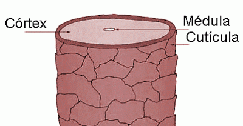
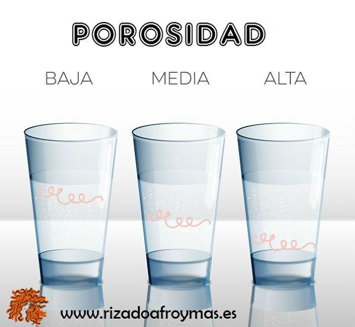

Qué es la porocidad del cabello
La porosidad del cabello es la facultad o capacidad que tiene nuestro cabello para absorber y retener la humedad y eso es un aspecto básico e imprescindible para mantener el pelo hidratado y nutrido. Entendamos como un es cabello, veamos la estructura de la fibra capilar :
La cutícula es la parte más externa de la fibra capilar y es la que determina el grado de absorción y retención de la humedad. Además del obvio componente genético, al ser la parte más externa, también es la más afectada por los agentes externos, como el sol, la polución, el uso de aparatos de calor, los tratamientos químicos (desrizados, permanentes, tintes...),.. etc... , cuanto más estrés externo reciba nuestro cabello, más dañada o "abierta" estará nuestra cutícula y si tenemos en cuenta que la fibra capilar se compone básicamente de una proteína llamada queratina, podemos decir que la cutícula dañada sufre una pérdida importante de esa proteína, sobre todo en los cabellos que han sido sobre-procesados, teñidos, o expuestos a otros castigos como años de peinado con calor extremo, alisados, permanentes, etc...
- -BAJA POROSIDAD: Es que tiene la cutícula más "cerrada" y entrelazada, haciendo difícil la penetración del agua y la humedad en el córtex, pero una vez que la consigue, la mantiene.
- -POROSIDAD MEDIA: Esta sería la perfecta, pues las cutículas tienen una apertura media que permite poder hidratar el córtex a la vez que mantiene la hidratación.
- -ALTA POROSIDAD: Cutículas muy "abiertas" que permiten la entrada de la humedad con mucha facilidad pero tienen esa misma facilidad para expulsarla, con lo que el cabello es difícil de mantener hidratado, tal como entra la humedad , sale.
Ahora viene "La Pregunta"... y como puedo saber la porosidad de mi cabello? Realmente si estamos atentos y aconstumbrados a observar nuestro pelo, en algunos casos se distingue claramente, sobre todo en los cabellos de ALTA POROSIDAD, ya que suelen ser cabello que siempre se ven secos y que cuando se mojan, se empapan rápidamente a la vez que se secan también muy rápido. Además tienden al encrespamiento de forma habitual, ya que al no retener la humedad el cabello está seco y con la cutícula abierta, como buscando agua porque.. tiene sed!! El cabello de BAJA POROSIDAD , al contrario... tarda varios minutos bajo la ducha en mojarse completamente y también requiere más tiempo para secarse. Hay unas pruebas sencillas que puedes hacer para averiguarlo y que se han hecho muy populares.
LA PRUEBA DEL VASO DE AGUA:

Consiste en sumergir un cabello limpio y seco en un vaso de agua y ver si cae al fondo o se queda flotando. Es importante para ésta prueba que el cabello esté limpio, completamente seco y no lleve ningún producto, ni acondicionador, leave-in, aceite, etc.... ya que podría alterar el resultado. Puedes, por ejemplo, lavarte el cabello con el champú y después del aclarado, antes de ponerte el acondicionador, coger alguno de los cabellos que seguramente se desprenderán, lo dejas secar y ... listo! Mejor que sea un pelo entero, no cortado, o sea, con la raíz. El agua debe estar a temperatura ambiente. -Pon el pelo en el agua y empújalo ligeramente para que se moje por completo, que no quede flotando seco. -Observa durante 2 a 4 minutos. -Si el pelo se hunde rápido, 1 minuto o menos, es de ALTA POROSIDAD. -Si se va hundiendo lentamente y se queda medio flotando o con una parte sumergida y otra en la superficie, es de POROSIDAD MEDIA. -Si se queda flotando o tarda en irse hundiendo más de 3 o 4 minutos, es de BAJA POROSIDAD. El agua no penetral